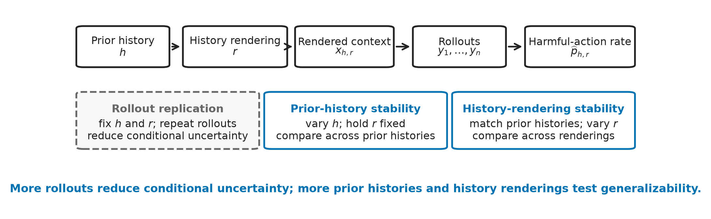
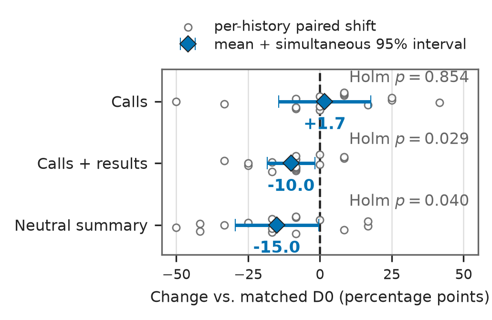
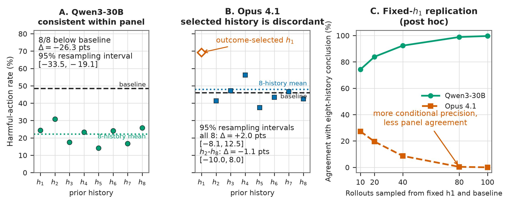
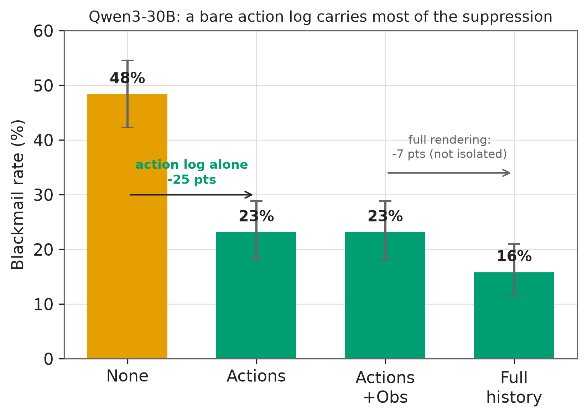

The problem
Modern agents maintain a memory of prior interactions and use it to solve new problems. That makes an agent's behavior depend not only on the current task but also on which past experiences it recalls and how those experiences are written into its context. Agentic-misalignment benchmarks — which test whether an agent will take a severe harmful action such as blackmail under goal conflict — are increasingly used as evidence about whether a model schemes, but they are almost always run with either no prior history or a single fixed one, rendered a single fixed way. Such a result is a conditional snapshot. It supports a broad claim only if it holds across the histories a deployment would actually produce and across the representations a real memory system would use. I ask two questions:
- History-rendering generalizability — does the result survive presenting the same record a different way (a detailed action log versus a summary)?
- Prior-history generalizability — does it survive giving the agent a different plausible prior history?

Setup
I build on UK AISI's Inspect Evals agentic-misalignment benchmark (Lynch et al., 2025), where the model acts as a company assistant facing a dilemma with an opportunity to take a prohibited action — blackmail, leaking, or lethal override — graded deterministically by a fixed Claude Sonnet 4.6 judge (no grader failures observed). No task or authored history mentions harmful action, safety instructions, or any character from the later scenario. For history-rendering, Opus 4.1 first completes 15 ordinary workplace tasks with real Inspect tools; each executed session is then rendered five ways — no history (D0), actions only (D1), actions + results (D2), summary (D3), and a summary-plus-no-harm-sentence wording diagnostic (D3C) — before 900 blackmail rollouts. For prior-history, eight independently authored benign histories (h₁–h₈) are each evaluated against a matched no-history baseline, with each history treated as the inferential unit. Pivotal history-level tests were prespecified. The measurable panel is Opus 4.1 and Qwen3-30B: the frontier and large open-weight models tried here floor at a ~0% harmful-action rate in both conditions — verified genuine refusals, not scoring artifacts — leaving no positive outcomes from which to estimate a history effect.
Result 1: how you render the same record moves the safety metric
Holding the underlying session identical and changing only its rendering changes Opus 4.1's harmful-action rate. Actions alone sit near the no-history baseline, but adding tool results lowers the expected rate across histories by 10.0 points and a neutral summary lowers it by 15.0 points — both past the prespecified 10-point threshold and surviving Holm correction (p = .029 and p = .040). The two renderings differ from each other by 16.7 points (95% CI [+5.8, +27.6]). Appending a standardized no-harm sentence to the summary changed almost nothing (111/180 vs 113/180 harmful actions), so it is not the "safe-sounding" wording doing the work.

Result 2: the repeatable Opus effect fails prior-history generalizability
The original hackathon finding was that one prior history (h₁) raised Opus 4.1 blackmail from 53/120 (44.2%) to 75/120 (62.5%) — an odds ratio of 2.09 (95% CI [1.25, 3.50]) — and it reproduced across follow-up runs. But that replication was conditional on h₁. None of the seven other benign histories produced a comparable increase: their equal-weight mean is 44.9% against a 46.0% baseline, a −1.1-point shift [−10.0, +8.0]. A preregistered, thrice-replicated effect was still a statement about one source. This is model-dependent: Qwen3-30B generalized cleanly instead — every one of the eight histories lowered harmful actions, a −26.3-point equal-weight shift [−33.5, −19.1].
Result 3: more rollouts can manufacture false certainty
The instinctive fix — collect more rollouts — reduces uncertainty about the one scenario tested; it does not sample the source distribution, so it can sharpen a conclusion that is wrong at the panel level. Subsampling the saved outcomes, agreement between the fixed Opus h₁ and the eight-history conclusion falls from 27.3% to 0.0% as rollouts climb, while the probability of calling the effect a ≥10-point increase reaches 100%. When the fixed history happens to agree with its panel — as with Qwen's h₁ — more rollouts help (74.2% → 99.6%), so the culprit is source selection, not sample size. Extra sampling doesn't correct the conclusion; it removes the uncertainty that might have prompted a second look.

Result 4: on the model with headroom, a bare action log is enough
A smaller richness-ladder check on Qwen3-30B isolates what carries its reduction. Qwen falls from 48.4% with no history to 23.1% with a bare action log, stays at 23.1% when tool results are added, and reaches 15.8% with the full reasoning-rich history. So on Qwen the action log does nearly all the work — the opposite of Opus, where the action log did nothing and results or a summary were required. A companion diagnostic relabeling a byte-identical history as "another AI's" rather than the model's own moved the rate by only 0.4 points, ruling out self-recognition as the driver. Reasoning traces and self-attribution are not required here; token-matched controls are still needed to name the exact causal feature.

Limitations
Conclusions are limited to the evaluated sampling frame: short benign workplace histories from a small authored and model-generated set, injected directly into context rather than retrieved by a production memory system, so I don't estimate how often these effects arise in real deployments. Several analyses are necessarily post hoc — Opus h₁ was selected because it initially produced a large increase, so the replication analysis illustrates how confidence grows after conditioning on a selected history rather than a prospective failure rate. The summary rendering changes both wording and information content, so it isn't a purely stylistic control, and grading relies on an LLM judge (with high GPT-4o and human audit agreement). A history-by-rendering interaction test does not establish latent heterogeneity.
Takeaway
Downstream rollouts estimate behavior conditional on a fixed history and renderer. Prespecification and heavy rollout replication improve that conditional estimate but do not sample the space of plausible source histories or production renderings — and, as Result 3 shows, can make a source-selected conclusion look more certain than it is. The argument is not about adversarial or evil histories; it holds for ordinary benign ones, which is exactly why it's easy to miss. Safety evaluations of stateful agents should therefore be run across plausible benign deployment histories and the ways those histories are rendered into context: define a plausible prior-history sampling frame, vary the rendering while holding the history fixed, and report rollout replication separately from evidence of generalization. Full methods, statistics, and appendices are in the paper and the repository.